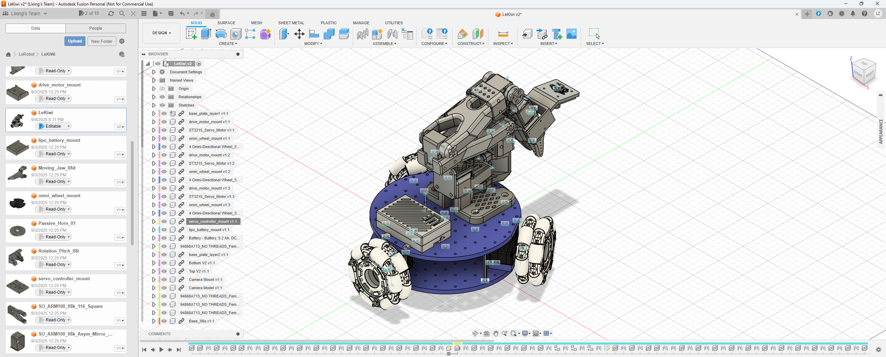

Build Up the LeKiWi
← Back to Previous
Page
Overview
The LeKiWi is a mobile manipulator robot platform developed by LeRobot. It
consists of a mobile base and a 6-DoF robotic arm, the SO101.
Works done so far
- The LeRobot follower arm has been built and tested. details
- The LeRobot leader-follower control system has been implemented and
tested. details
Objectives
- Build up the LeKiWi robot platform.
- It should be able to move.
- The video stream from both cameras mounted on the base and the
endeffector should be accessible.
Details
Hardware Setup
The 3D model of the LeKiWi setup:
The official CAD files for
LeKiWi is constructed in Fusion
360.

LeKiWi CAD Overview
Bill of Materials (BOM) and 3D-Printing
Parts:
Overview of the hardware components used in the LeKiWi
setup:
- The Follower Arm, built up and tested according to the official
tutorial. TODO_Pic
- The Leader Arm. TODO_Pic
- The Raspberry Pi and necessary accessories. TODO_Pic
- 2 cameras. TODO_Pic
- The extra parts for the LeKiWi base. TODO_Pic
- The distance column is 3D-printed. TODO_Pic